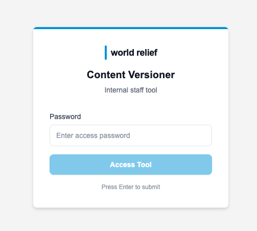
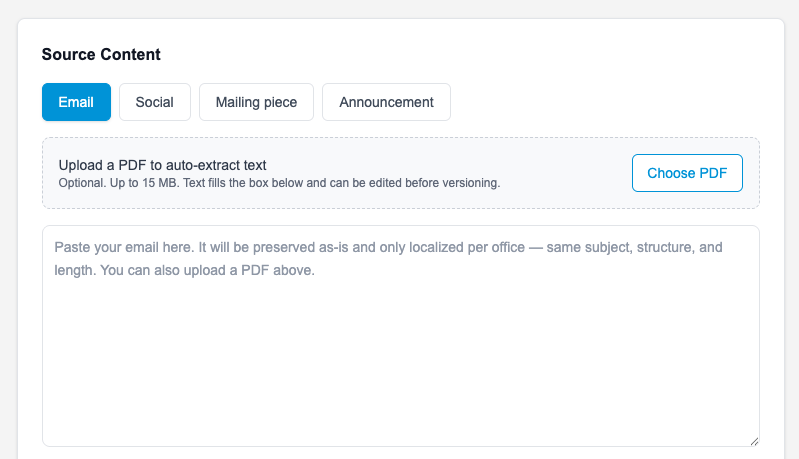
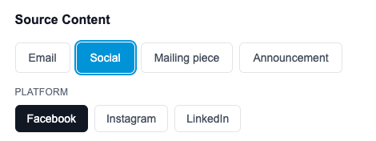
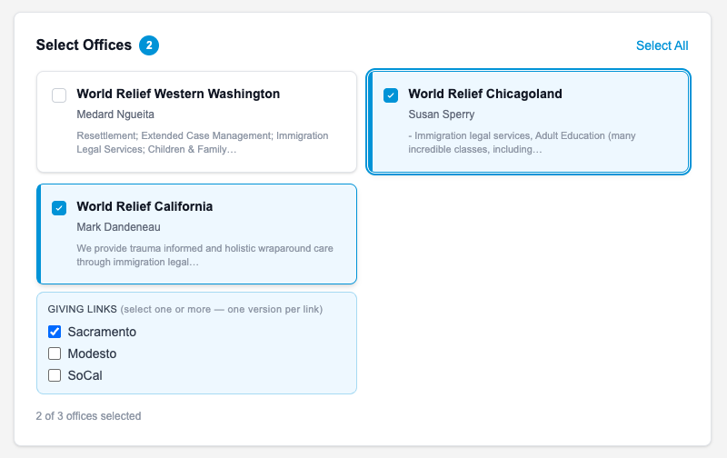
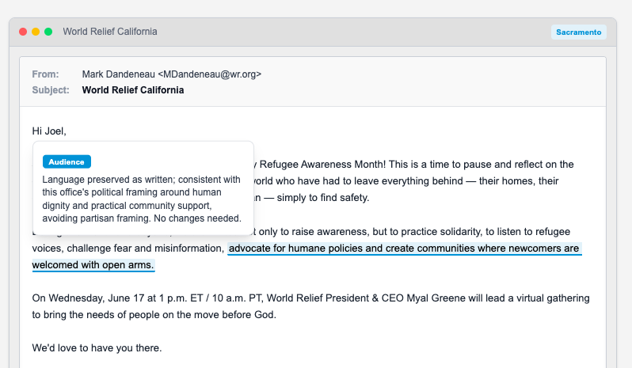
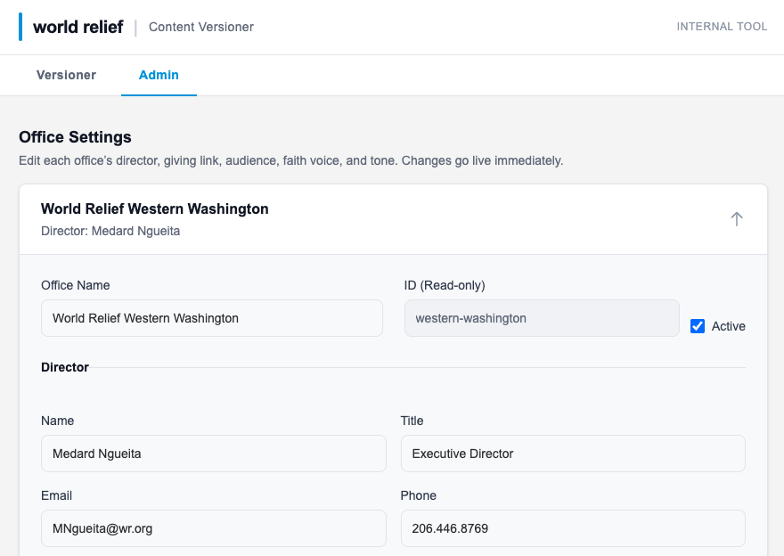

World Relief
Paste one piece of content and get on-brand, office-ready versions for every U.S. office — automatically.
What this tool does. You write a piece once — an email, a social post, a mailing piece, or an announcement — and the Content Versioner produces a tailored version for each office you choose. Each version keeps the office director's voice, speaks to that office's audience, and swaps in the correct local giving link. It localizes your content; it does not rewrite it.
AI Policy compliance. All content produced with this tool must adhere to World Relief's AI Policies and communications standards. The tool creates a draft — every version is your responsibility to review against those policies, and to confirm for accuracy, tone, and brand, before it is sent, posted, or published.
Open the tool and enter the shared team password. You'll stay signed in for the day.

Pick what you're making. This tells the tool how to format each version (see the reference table below).

Picking Social reveals the platform choices:

Paste your text into the box. For Email and Mailing piece you can also upload a PDF and the tool will pull the text out for you. For an Announcement, just describe it — what it is, when, where, and the ask.
Use the optional instructions box for anything specific to this batch — a deadline to emphasize, a tone note, a detail to keep.
Check the offices you want versions for. California serves multiple sites, so you can check one or more giving links (Sacramento, Modesto, SoCal) — you'll get a separate version for each link you select, each tagged with the site name.

Click Generate Versions. All versions are produced at once — usually within a few seconds.

The Admin tab lets you update any office's details — director name and title, giving link, audience and voice notes, and signature. Changes apply to every version generated afterward.

| Type | What it's for | What the tool does |
|---|---|---|
| An existing email to send from an office. | Keeps your email as-is; localizes voice, local references, signature, and swaps the giving link. | |
| Social | An existing post for Facebook, Instagram, or LinkedIn. | Preserves the post; tailors it to the office and the chosen platform. |
| Mailing piece | Appeal letter, invitation card, insert, or postcard copy. | Keeps the piece and its structure; localizes the office-specific parts. |
| Announcement writes it for you | An event or news item you haven't written yet. | Writes a finished announcement in the office's voice. Text only — no images. |
The tool always…
The tool never…
Tip. Always skim the Keep in Mind notes before you send. If a version reads off, click Regenerate on that card. If a whole run fails, wait a moment and generate again.
Before you send. The tool produces a draft. A person should give every version a final read — confirm the facts, the giving link, that it sounds like the office, and that it adheres to World Relief's AI Policies — before it goes out.